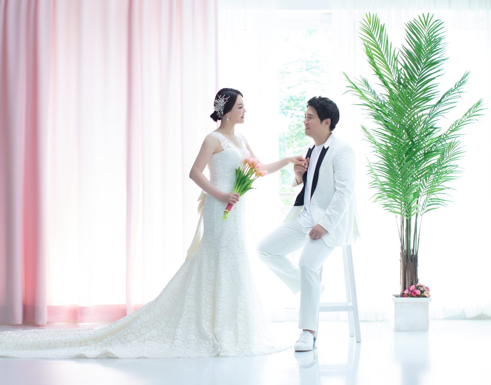
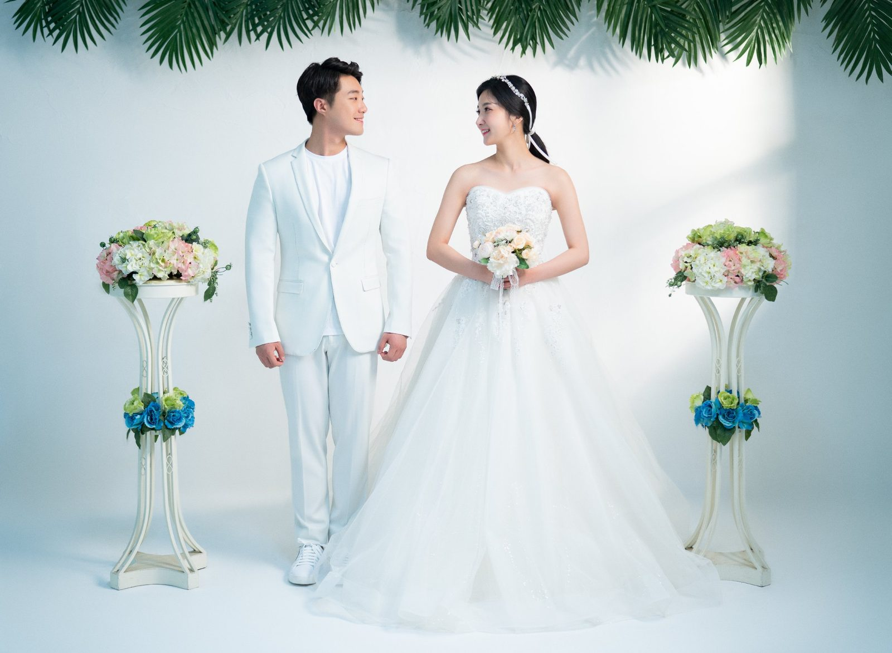
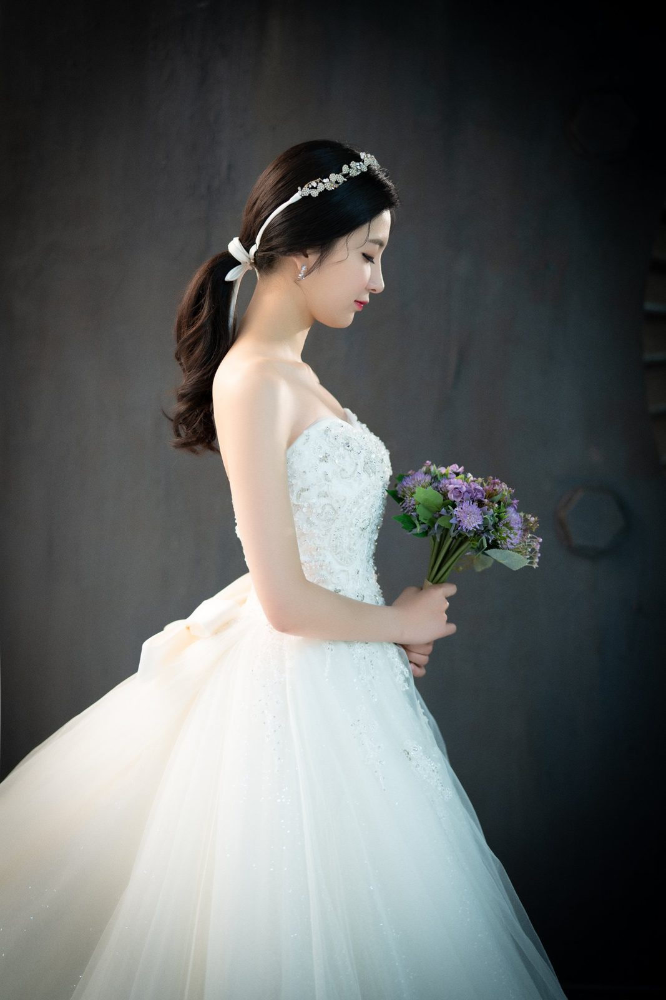
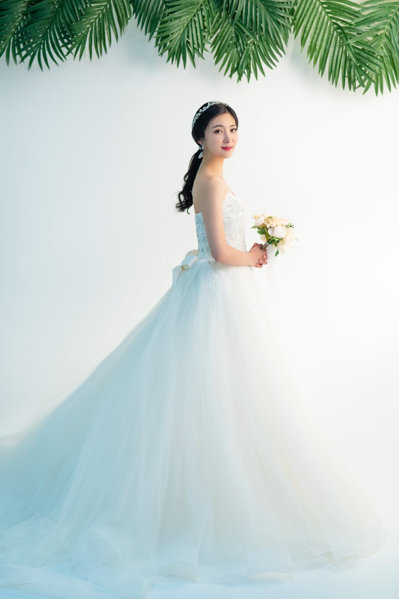
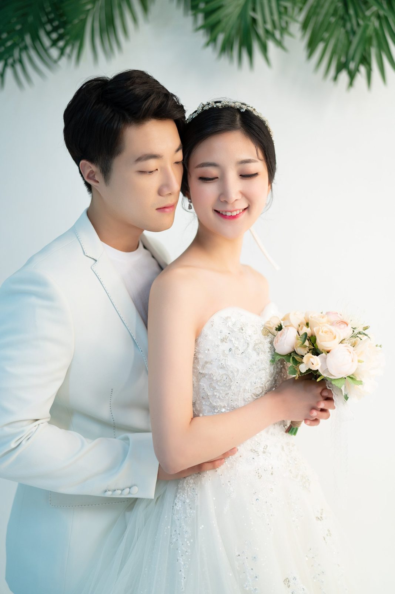
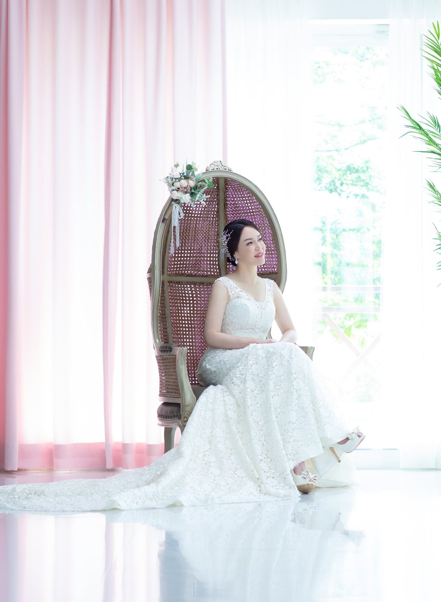
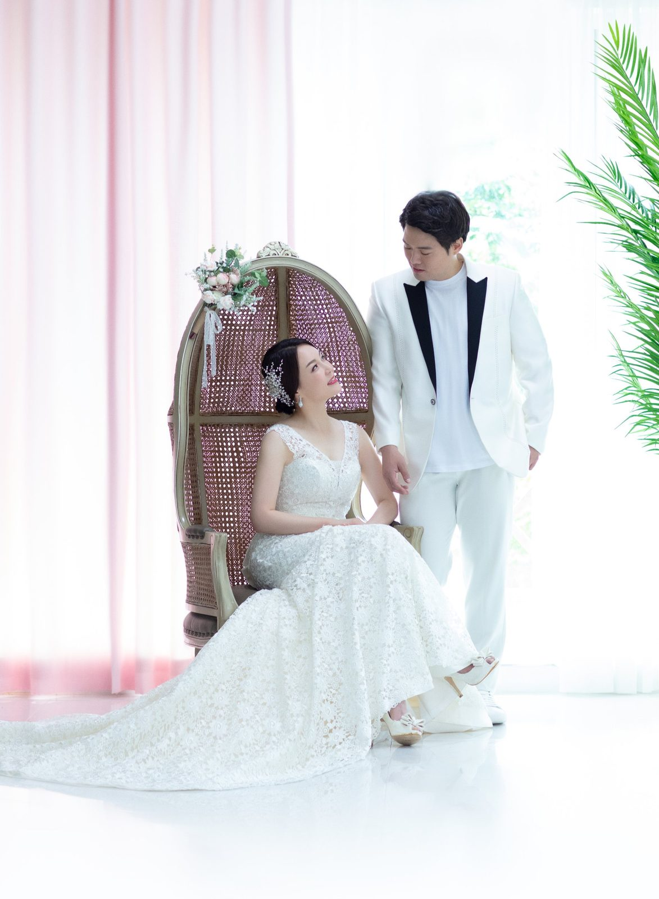
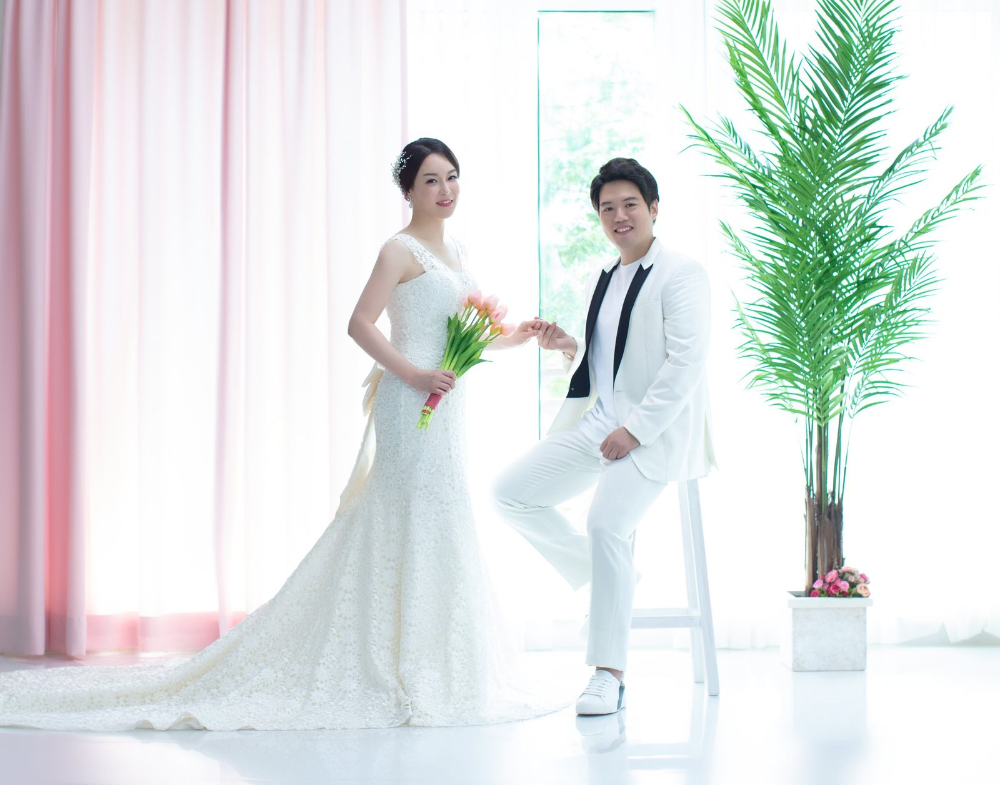
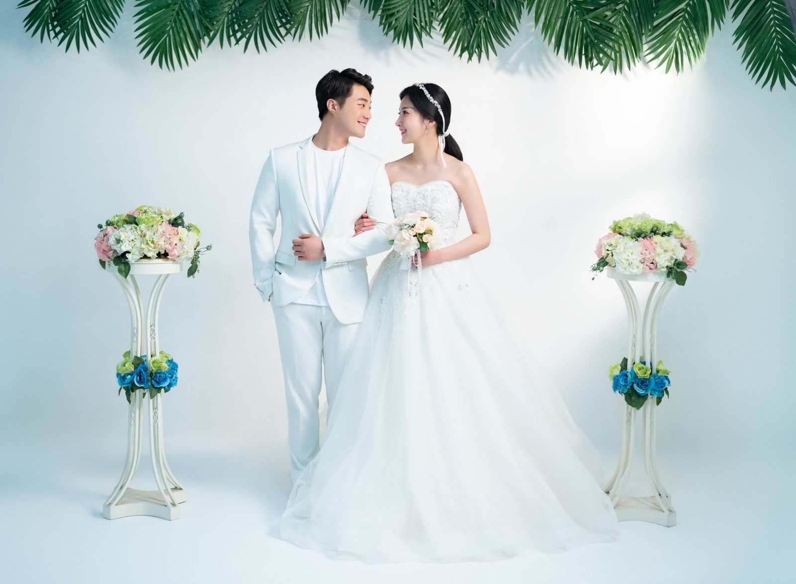
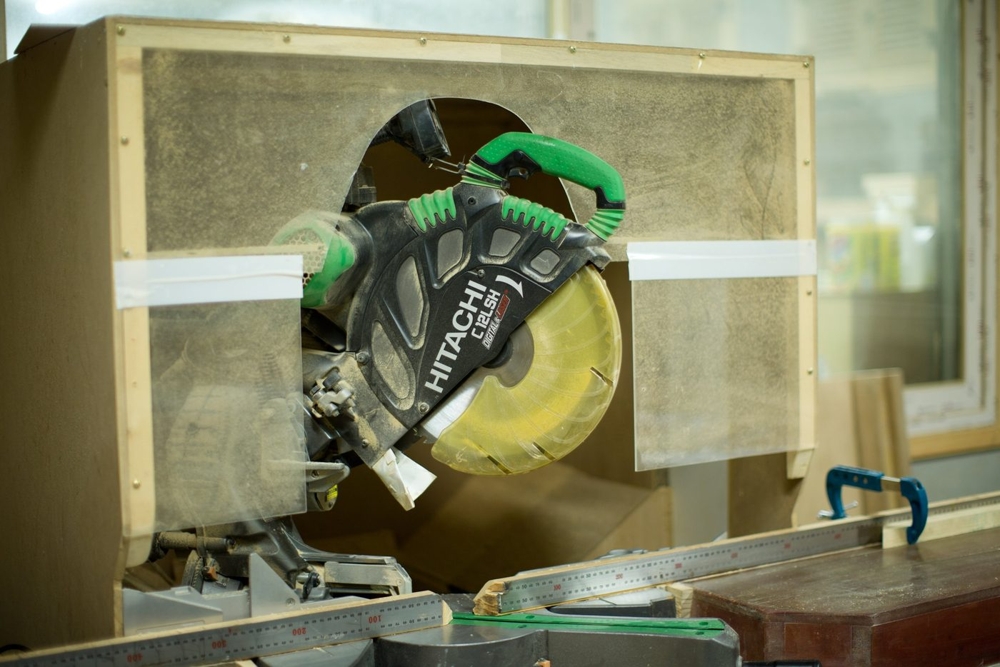

창원 리마인드웨딩 — 결혼기념일에 다시 입는 드레스
2026-10-19 발행
창원 리마인드웨딩은 결혼식 이후 한 번도 드레스를 입지 못한 부부가 다시 예식을 차려 보는 촬영입니다. 신혼 때와 다른 점이 하나 있습니다. 이번에는 자녀가 옆에서 지켜봅니다. 그 자리가 사진으로 남습니다. 결혼기념일을 앞둔 부부에게 가장 잘 어울리는 촬영입니다.

사랑이야기 스튜디오 창원점은 경남 창원시 성산구 원이대로 652, 상남동 롯데빌딩 2층에 있습니다. 리마인드웨딩은 부부 두 분만 찍는 촬영입니다. 자녀까지 함께 서는 웨딩·파티복 가족사진과 결이 비슷하지만, 두 분의 시간에 집중한다는 점이 다릅니다.

리마인드웨딩은 언제 준비하면 좋을까요? 결혼기념일이 가장 자연스럽습니다. 10주년, 20주년, 30주년처럼 숫자가 남는 해가 좋고, 환갑과 칠순을 앞둔 해에 자녀가 선물로 준비해 드리는 경우도 많습니다. 예약은 한두 달 전에 하시는 편이 여유롭습니다.

드레스는 의상실에서 고릅니다. 신부는 웨딩드레스를, 신랑은 정장이나 턱시도를 입습니다. 부케와 면사포, 목걸이와 귀걸이, 티아라까지 준비되어 있습니다. 드레스는 입어 봐야 압니다. 사진으로 보던 드레스와 입었을 때의 드레스가 다르기 때문에, 상담 때 두어 벌을 입어 보시길 권합니다.

가장 좋은 순간은 신부가 드레스를 입고 나오는 때입니다. 남편분의 표정이 그날 가장 좋은 사진이 됩니다. 서른일곱 해 동안 그 표정을 참 여러 번 봤습니다. 예외는 없었습니다. 그래서 저는 그 순간에 셔터를 아끼지 않습니다.

촬영은 홀과 창가에서 함께 합니다. 샹들리에 아래에서 예식처럼 서는 사진을 찍고, 자연광이 드는 창가로 옮겨 차분한 사진을 담습니다. 웨딩드레스는 빛을 받을 때 결이 가장 잘 살아납니다. 그래서 창가 자리를 꼭 한 번은 씁니다.

드레스를 다시 입는 일이 부담스럽지 않을까 걱정하시는 분도 있습니다. 하지만 대부분은 드레스를 입고 나오는 순간 표정이 달라집니다. 그리고 한 가지 더, 이번에는 서두를 필요가 없습니다. 결혼식 날에는 예식 시간이 정해져 있었지만, 지금은 두 분의 속도로 찍습니다.

자녀가 부모님의 결혼기념일을 앞두고 몰래 예약해 드리는 경우도 많습니다. 그런 날은 신부 어머니가 드레스를 입고 나오실 때 가족이 가장 크게 웃습니다. 그 웃음까지 함께 사진에 담습니다. 자녀분들은 옆에서 휴대폰으로도 마음껏 찍으셔도 됩니다.

촬영은 보통 두 시간 안쪽으로 잡습니다. 드레스를 입고 나오는 순간, 홀에서 서는 사진, 창가에서 자연광으로 찍는 사진, 두 분이 마주 보는 사진. 이 순서로 이어가면 표정이 자연스럽게 풀립니다. 시간이 넉넉하면 컨셉을 하나 더 넣을 수도 있습니다.
예약은 결혼기념일 한두 달 전이 좋습니다. 드레스와 헤어를 함께 준비해야 하고, 자녀분들의 일정도 맞춰야 하기 때문입니다.
오실 때 따로 준비하실 것은 없습니다. 드레스와 정장, 부케와 소품은 저희가 준비합니다. 다만 신부님은 드레스 안에 입으실 속옷을 편한 것으로 준비해 오시면 좋습니다.
메이크업과 헤어도 함께 합니다. 신부는 드레스에 맞춰 머리를 올리고, 신랑은 정장에 맞게 정돈합니다. 결혼식 날과 다른 것은, 이번에는 서두르지 않는다는 점입니다.
사진은 함께 봅니다. 두 분이 서로를 볼 때 찍힌 컷이 대개 가장 좋습니다. 그 컷을 크게 남기시고, 자녀와 함께 찍은 컷은 작게 몇 장 더 남기시길 권합니다.
액자는 거실에 걸 크기로 고르시면 좋습니다. 원목 액자는 시간이 지나도 색이 변하지 않아 오래 두고 보기에 좋습니다.
리마인드웨딩을 준비하시는 자녀분께 한 가지 말씀드리고 싶습니다. 부모님께는 촬영 사실을 미리 알리지 않는 편이 좋습니다. 드레스를 입고 나오시는 순간의 표정이 그 때문입니다.
두 분이 다시 드레스와 정장을 입고 서는 시간은 길지 않습니다. 하지만 그 시간은 사진 속에서 오래 이어집니다. 자녀에게는 부모님의 젊은 날이 되고, 두 분에게는 다시 한 번의 신혼이 됩니다.

서른일곱 해 동안 리마인드웨딩을 찍어 오면서 배운 것이 있습니다. 부부는 카메라를 의식할 때보다 서로를 볼 때 훨씬 잘 나옵니다. 그래서 저는 두 분께 늘 같은 부탁을 합니다. "잠깐만 서로를 봐 주세요." 그 한마디면 사진이 바뀝니다.

두 분 사진이 끝나면 자녀가 합류해 가족사진을 이어서 찍습니다. 리마인드웨딩과 가족사진을 한자리에서 함께 찍어 두시면, 그날 하루가 온 가족의 기념일이 됩니다. 촬영이 끝나면 김스카페에서 커피 한 잔 드시며 사진을 함께 보실 수 있습니다.
결혼기념일 당일에 촬영을 잡으시면 하루가 더 특별해집니다. 다만 그날은 식사 약속이 겹치기 쉬우니, 촬영 시간을 먼저 정해 두시는 편이 좋습니다.
두 분만 오셔도 되고, 자녀와 손주가 함께 오셔도 됩니다. 인원이 많으면 촬영 시간이 조금 길어지지만, 그만큼 사진도 풍성해집니다.
리마인드웨딩 사진은 신혼 사진과 다르게 표정이 편합니다. 긴장하지 않으셔도 된다는 뜻입니다. 오히려 긴장한 신혼 사진보다, 편안한 이번 사진을 더 좋아하시는 분들이 많습니다.
촬영 전날은 푹 주무시는 것이 가장 좋은 준비입니다. 피부도 표정도 잠에서 나옵니다. 특별히 무리하지 않으셔도 됩니다.
원하시면 원목 액자까지 골라 거실에 걸어 두실 수 있습니다. 리마인드웨딩 사진은 액자에 담았을 때 가장 잘 어울립니다. 큰 사진 한 장이 거실에 걸리면, 그날의 약속이 집 안에 남습니다.
촬영 날짜를 정하실 때는 두 분의 컨디션도 함께 보세요. 결혼기념일 전후로 여유 있는 날을 고르시면 훨씬 편안합니다.
드레스를 입고 계단을 오르내리실 일은 없습니다. 스튜디오 안에서 이동하니 편한 신발을 신으셔도 됩니다. 사진에는 신발이 거의 나오지 않습니다.
리마인드웨딩은 한 번으로 끝나지 않습니다. 10년 뒤에 다시 오시는 분들도 있습니다. 그때마다 드레스는 조금 달라지고, 두 분의 표정은 더 편해집니다. 사진을 모아 두시면 그 시간이 한 권이 됩니다.
촬영 후 사진을 고르는 시간도 함께 잡아 두시면 좋습니다. 그 자리에서 액자까지 정하시면 한 번에 끝납니다.
결혼기념일에 드레스를 다시 입는 일은, 그날의 약속을 한 번 더 확인하는 일입니다. 그리고 그 사진은 자녀에게 부모님의 젊은 날을 보여 주는 사진이 됩니다. 두 분이 웃는 사진 한 장이, 가족의 시간을 이어 줍니다.
자주 묻는 질문
Q. 창원에서 리마인드웨딩을 하려면 예식장을 빌려야 하나요?
A. 아닙니다. 스튜디오 홀과 창가에서 촬영합니다. 예식장을 따로 예약하실 필요가 없습니다.
Q. 자녀도 함께 찍을 수 있나요?
A. 네. 부부 사진을 먼저 찍고, 자녀가 합류해 가족사진을 이어서 찍으실 수 있습니다.
Q. 드레스는 어떤 것이 준비되어 있나요?
A. 의상실에 웨딩드레스와 정장이 준비되어 있습니다. 체형에 맞는 드레스를 상담 때 함께 입어 보고 골라 드립니다.

오시는 곳
사랑이야기창원점
- 주소 경남 창원시 성산구 원이대로 652, 상남동 롯데빌딩 2층
- 전화 055-287-8022
- 영업시간 오전 10:00 ~ 오후 7:00
- 예약 전화 상담 · 카카오톡 채널
- 주차 건물 지하 주차장
김작가사진이야기 의령
- 주소 경남 의령군 궁류면 청정로 1188
- 전화 055-574-3706
- 영업시간 오전 10:00 ~ 오후 7:00
- 예약 전화 상담 · 카카오톡 채널
- 주차 전용 주차장
이 글에 한마디
댓글창을 준비하고 있습니다. 그동안 궁금한 점은 카카오채널로 남겨 주시면 바로 답변드립니다.
카카오채널로 한마디 남기기